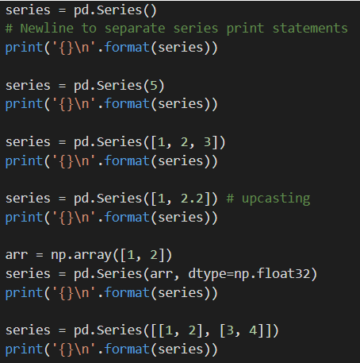

Learn about the pandas Series object and its basic utilities
Write code to create several Series objects
1-D data
Similar to NumPy, pandas frequently deals with 1-D and 2-D data. However, we use two separate objects to deal with 1-D and 2-D data in pandas. For 1-D data, we use the pandas.Series objects, which we'll refer to simply as a Series.
A Series is created through the pd.series constructor, which takes in no required arguments but does have a variety of keyword arguments.
The first keyword argument is data, which specifies the elements of the Series. If data is not set, pd.Series returns an empty Series. Since the data keyword argument is almost always used, we treat it like a regular first argument (i.e. skip the data= prefix).
Similar to the np.array constructor, pd.series also takes in the dtype keyword argument for manual casting.

In our examples, we initialized each Series with its values by setting the first argument using a scalar, list, or NumPy array. Note that pd.Series upcasts values in the same way as np.array. Furthermore, since Series objects are 1-D, the ser variable represents a Series with lists as elements, rather than a 2-D matrix.
Index
In the previous examples, you may have noticed the zero-indexed integers to the left of the elements in each Series. These integers are collectively referred to as the indexof a series, each individual index element is referred to as a label.
The default index is integers from 0 to n-1, where n is the number of elements in the Series. However, we can specify a custom index via the index keyword argument of pd.Series
The index keyword argument needs to be a list or array with the same length as the data argument for pd.Series.The values in the index list can be any hashable type (e.g. integer, float, string).
Dictionary input
Another way to set the index of a Series is by using a Python dictionary for the data argument.The keys of the dictionary represent the index of the Series, while each individual key is the label for its corresponding value.
The code below shows how to use pd.Series with a Python dictionary as the first argument. In our example, we set 'a', 'b', 'c' as the Series index, with corresponding values1,2 and 3